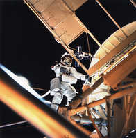

8/6/1973SearchAstronaut Owen Garriott Performs EVA During Skylab 3: Scientist-astronaut Owen K. Garriott, Skylab 3 science pilot, is seen performing an extravehicular activity at the Apollo Telescope Mount (ATM) of the Skylab space station cluster in Earth orbit, photographed with a hand- held 70mm Hasselblad camera. Garriott had just deployed the Skylab Particle Collection S149 Experiment. The experiment is mounted on one of the ATM solar panels. The purpose of the S149 experiment was to collect material from interplanetary dust particles on prepared surfaces suitable for studying their impact phenomena. Earlier during the EVA Garriott assisted astronaut Jack R. Lousma, Skylab 3 pilot, in deploying the twin pole solar shield. (NASA on The Commons)